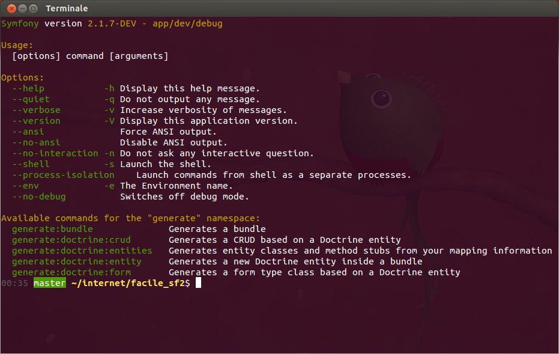

MVC? no
Il modello non esiste
Request/Response
costruito sulla specifica HTTP
un insieme di componenti (quasi) disaccoppiati che svolgono uno specifico task
Zend Framework 2 ha la stessa impostazione
i componenti sono i mattoncini base di Symfony2, creano uno strato sopra il php, per astrarre compiti comuni ma complicati se eseguiti in php puro. Sono testati, sicuri e open source
gestione di task per cron, manutenzioni al db etc
use Symfony\Component\Filesystem\Filesystem;
use Symfony\Component\Filesystem\Exception\IOException;
$fs = new Filesystem();
try {
$fs->mkdir('/tmp/random/dir/' . mt_rand());
} catch (IOException $e) {
echo "An error occurred while creating your directory";
}
// this directory exists, return true
$fs->exists('/tmp/photos');
// works only if image-ICC has been modified after image.jpg
$fs->copy('image-ICC.jpg', 'image.jpg');
// image.jpg will be overridden
$fs->copy('image-ICC.jpg', 'image.jpg', true);
use Symfony\Component\Process\Process;
$process = new Process('ls -lsa');
$process->setTimeout(3600);
$process->run();
if (!$process->isSuccessful()) {
throw new \RuntimeException($process->getErrorOutput());
}
print $process->getOutput();
ridistribuzione di codice, plugin systems
use Symfony\Component\EventDispatcher\EventDispatcher;
$dispatcher = new EventDispatcher();
$listener = new AcmeListener();
$dispatcher->addListener('foo.action', array($listener, 'onFooAction'));
// closures
$dispatcher->addListener('foo.action', function (Event $event) {
// will be executed when the foo.action event is dispatched
});
// create the FilterOrderEvent and dispatch it
$event = new FilterOrderEvent($order);
$dispatcher->dispatch(StoreEvents::STORE_ORDER, $event);
$ mkdir project
$ cd project
$ composer require symfony/filesystem 2.1.*composer crea la cartella vendor, scarica le dipendenze e crea l'autoloader
possiamo usarlo nel nostro codice, basta includere l'autoloader
include __DIR__.'/vendor/autoload.php';
use Symfony\Component\Filesystem\Filesystem;
$fs = new Filesystem();
$fs->mkdir('watta!');Al di sopra dei componenti ci sono i Bundle
Ogni cosa è un bundle in Symfony2.
Symfony2 stesso in realtà è un bundle sviluppato da Sensio Labs che si chiama FrameworkBundle
creare un sito in Symfony2 == creare un bundle
# app/config/routing.yml
contact:
pattern: /contact
defaults: { _controller: FacileCmsBundle:Main:spider }
class MainController
{
public function spiderAction()
{
return new Response('Spider!');
}
}